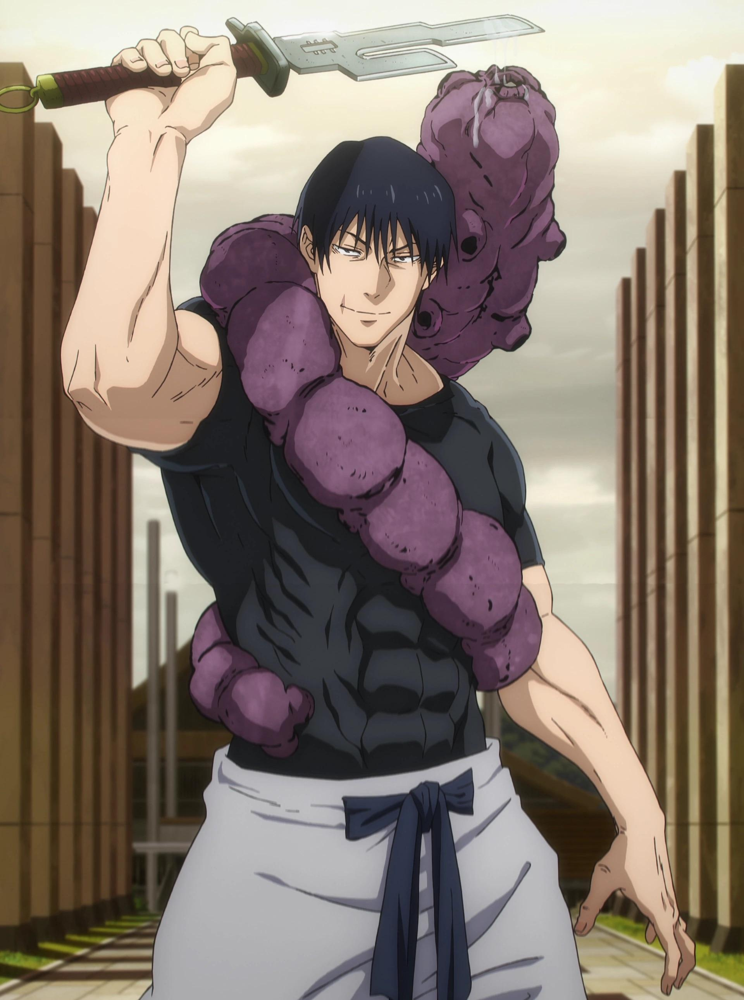

Knife Fighting is central to Toji's style, given his mastery of edged weapons like daggers and the Split Soul Katana, focusing on close-range lethality and quick stabs. This pragmatic art emphasizes efficiency in slashing vital areas, mirroring Toji's soul-targeting precision and stealth kills. This inspirational words reflect his lethal efficiency, striking vital points with silent, unforgiving precision.
